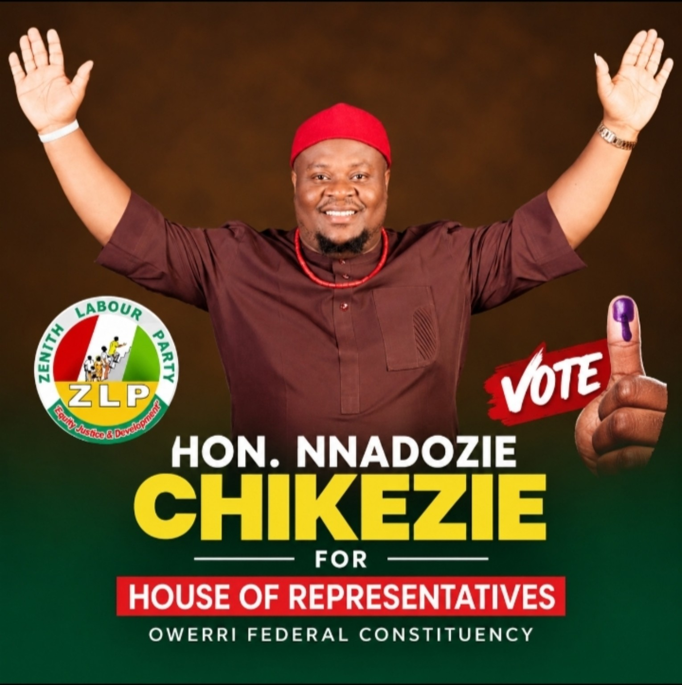
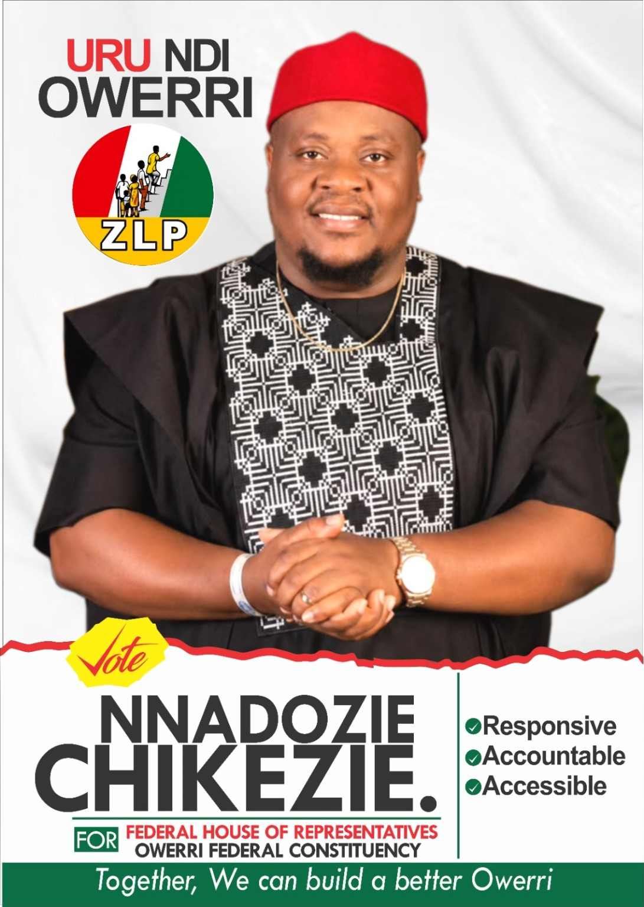
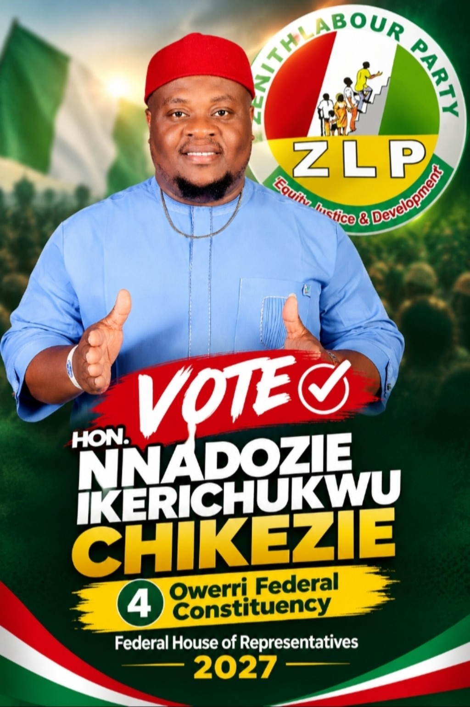

A Leader for the People
Nnadozie Chikezie is seeking to represent Owerri Federal Constituency in the Federal House of Representatives in 2027.
Education, opportunity and community service.
Nnadozie Chikezie's profile combines a background in education with human-capacity development, community support, employment assistance and other community interventions.
Zenith Labour Party
Campaign materials supplied for this website identify Nnadozie Chikezie with the Zenith Labour Party (ZLP).
A record built around people.
The campaign's supplied biography describes work spanning education, employment, relocation opportunities, healthcare assistance, infrastructure support and small-business assistance.
Campaign images
A selection of the campaign artwork and photographs supplied for this website.





Campaign & Policy Questions
Have a question about our 2027 agenda, manifesto, or upcoming constituency events? Tap below to send it directly to our team.
Ask a Campaign or Policy Question▾
Complaints & Community Feedback
Report a pressing community issue, share constructive feedback, or raise a concern regarding your ward or the campaign.